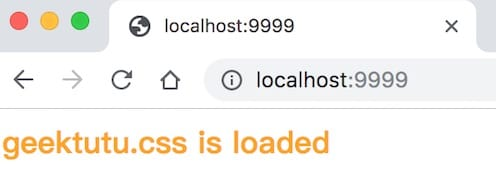

Go语言动手写Web框架 - Gee第六天 模板(HTML Template)
7天用 Go语言 从零实现Web框架教程(7 days implement golang web framework from scratch tutorial)，用 Go语言/golang 动手写Web框架，从零实现一个Web框架，以 Gin 为原型从零设计一个Web框架。本文介绍了如何为Web框架添加HTML模板(HTML Templ…
本文是 7天用Go从零实现Web框架Gee教程系列的第六篇。
- 实现静态资源服务(Static Resource)。
- 支持HTML模板渲染。
服务端渲染
现在越来越流行前后端分离的开发模式，即 Web 后端提供 RESTful 接口，返回结构化的数据(通常为 JSON 或者 XML)。前端使用 AJAX 技术请求到所需的数据，利用 JavaScript 进行渲染。Vue/React 等前端框架持续火热，这种开发模式前后端解耦，优势非常突出。后端童鞋专心解决资源利用，并发，数据库等问题，只需要考虑数据如何生成；前端童鞋专注于界面设计实现，只需要考虑拿到数据后如何渲染即可。使用 JSP 写过网站的童鞋，应该能感受到前后端耦合的痛苦。JSP 的表现力肯定是远不如 Vue/React 等专业做前端渲染的框架的。而且前后端分离在当前还有另外一个不可忽视的优势。因为后端只关注于数据，接口返回值是结构化的，与前端解耦。同一套后端服务能够同时支撑小程序、移动APP、PC端 Web 页面，以及对外提供的接口。随着前端工程化的不断地发展，Webpack，gulp 等工具层出不穷，前端技术越来越自成体系了。
但前后分离的一大问题在于，页面是在客户端渲染的，比如浏览器，这对于爬虫并不友好。Google 爬虫已经能够爬取渲染后的网页，但是短期内爬取服务端直接渲染的 HTML 页面仍是主流。
今天的内容便是介绍 Web 框架如何支持服务端渲染的场景。
静态文件(Serve Static Files)
网页的三剑客，JavaScript、CSS 和 HTML。要做到服务端渲染，第一步便是要支持 JS、CSS 等静态文件。还记得我们之前设计动态路由的时候，支持通配符*匹配多级子路径。比如路由规则/assets/*filepath，可以匹配/assets/开头的所有的地址。例如/assets/js/geektutu.js，匹配后，参数filepath就赋值为js/geektutu.js。
那如果我么将所有的静态文件放在/usr/web目录下，那么filepath的值即是该目录下文件的相对地址。映射到真实的文件后，将文件返回，静态服务器就实现了。
找到文件后，如何返回这一步，net/http库已经实现了。因此，gee 框架要做的，仅仅是解析请求的地址，映射到服务器上文件的真实地址，交给http.FileServer处理就好了。
// create static handler
func (group *RouterGroup) createStaticHandler(relativePath string, fs http.FileSystem) HandlerFunc {
absolutePath := path.Join(group.prefix, relativePath)
fileServer := http.StripPrefix(absolutePath, http.FileServer(fs))
return func(c *Context) {
file := c.Param("filepath")
// Check if file exists and/or if we have permission to access it
if _, err := fs.Open(file); err != nil {
c.Status(http.StatusNotFound)
return
}
fileServer.ServeHTTP(c.Writer, c.Req)
}
}
// serve static files
func (group *RouterGroup) Static(relativePath string, root string) {
handler := group.createStaticHandler(relativePath, http.Dir(root))
urlPattern := path.Join(relativePath, "/*filepath")
// Register GET handlers
group.GET(urlPattern, handler)
}
我们给RouterGroup添加了2个方法，Static这个方法是暴露给用户的。用户可以将磁盘上的某个文件夹root映射到路由relativePath。例如：
r := gee.New()
r.Static("/assets", "/usr/geektutu/blog/static")
// 或相对路径 r.Static("/assets", "./static")
r.Run(":9999")
用户访问localhost:9999/assets/js/geektutu.js，最终返回/usr/geektutu/blog/static/js/geektutu.js。
HTML 模板渲染
Go语言内置了text/template和html/template2个模板标准库，其中html/template为 HTML 提供了较为完整的支持。包括普通变量渲染、列表渲染、对象渲染等。gee 框架的模板渲染直接使用了html/template提供的能力。
Engine struct {
*RouterGroup
router *router
groups []*RouterGroup // store all groups
htmlTemplates *template.Template // for html render
funcMap template.FuncMap // for html render
}
func (engine *Engine) SetFuncMap(funcMap template.FuncMap) {
engine.funcMap = funcMap
}
func (engine *Engine) LoadHTMLGlob(pattern string) {
engine.htmlTemplates = template.Must(template.New("").Funcs(engine.funcMap).ParseGlob(pattern))
}
首先为 Engine 示例添加了 *template.Template 和 template.FuncMap对象，前者将所有的模板加载进内存，后者是所有的自定义模板渲染函数。
另外，给用户分别提供了设置自定义渲染函数funcMap和加载模板的方法。
接下来，对原来的 (*Context).HTML()方法做了些小修改，使之支持根据模板文件名选择模板进行渲染。
type Context struct {
// ...
// engine pointer
engine *Engine
}
func (c *Context) HTML(code int, name string, data any) {
c.SetHeader("Content-Type", "text/html")
c.Status(code)
if err := c.engine.htmlTemplates.ExecuteTemplate(c.Writer, name, data); err != nil {
c.Fail(500, err.Error())
}
}
我们在 Context 中添加了成员变量 engine *Engine，这样就能够通过 Context 访问 Engine 中的 HTML 模板。实例化 Context 时，还需要给 c.engine 赋值。
func (engine *Engine) ServeHTTP(w http.ResponseWriter, req *http.Request) {
// ...
c := newContext(w, req)
c.handlers = middlewares
c.engine = engine
engine.router.handle(c)
}
使用Demo
最终的目录结构
---gee/
---static/
|---css/
|---geektutu.css
|---file1.txt
---templates/
|---arr.tmpl
|---css.tmpl
|---custom_func.tmpl
---main.go
<!-- day6-template/templates/css.tmpl -->
<html>
<link rel="stylesheet" href="/assets/css/geektutu.css">
<p>geektutu.css is loaded</p>
</html>
type student struct {
Name string
Age int8
}
func FormatAsDate(t time.Time) string {
year, month, day := t.Date()
return fmt.Sprintf("%d-%02d-%02d", year, month, day)
}
func main() {
r := gee.New()
r.Use(gee.Logger())
r.SetFuncMap(template.FuncMap{
"FormatAsDate": FormatAsDate,
})
r.LoadHTMLGlob("templates/*")
r.Static("/assets", "./static")
stu1 := &student{Name: "Geektutu", Age: 20}
stu2 := &student{Name: "Jack", Age: 22}
r.GET("/", func(c *gee.Context) {
c.HTML(http.StatusOK, "css.tmpl", nil)
})
r.GET("/students", func(c *gee.Context) {
c.HTML(http.StatusOK, "arr.tmpl", gee.H{
"title": "gee",
"stuArr": [2]*student{stu1, stu2},
})
})
r.GET("/date", func(c *gee.Context) {
c.HTML(http.StatusOK, "custom_func.tmpl", gee.H{
"title": "gee",
"now": time.Date(2019, 8, 17, 0, 0, 0, 0, time.UTC),
})
})
r.Run(":9999")
}
访问下主页，模板正常渲染，CSS 静态文件加载成功。

白话复盘：模板负责拼页面，静态服务负责送文件
两类内容不要混在一起
HTML 模板是“带占位符的页面配方”。服务器把用户列表、标题等数据交给模板引擎，运行时得到最终 HTML。CSS、JavaScript、图片则通常不需要每次计算，它们是静态文件，浏览器请求什么，服务器就从指定目录读取并返回什么。
因此一次页面展示通常包含多次 HTTP 请求：浏览器先拿到渲染后的 HTML，解析到 <link> 或 <img> 后，再分别请求 CSS 和图片。看到 HTML 正常但样式丢失时，应检查静态资源 URL，而不是只盯着模板代码。
模板加载与渲染流程
- 启动阶段先注册模板函数，再用
ParseGlob解析模板。模板中用到的函数必须在解析前可见。 HTMLTemplate把解析结果保存在Engine中，避免每个请求都重新读盘和解析。- 路由调用
c.HTML，指定状态码、模板名和数据。 ExecuteTemplate把数据写入响应，html/template默认会对 HTML 上下文做转义，降低直接注入脚本的风险。Static把一个 URL 前缀映射到本地目录，并通过通配路由取出剩余文件路径。
容易踩坑
html/template与text/template不同；生成网页应优先使用前者提供的上下文转义。- 模板解析失败最好让程序在启动时明确报错，而不是等到第一个请求才发现页面不可用。
- 静态目录映射会暴露文件。必须限定根目录并阻止
..等路径逃逸，不能把项目根目录直接公开。 - 开发时从磁盘加载很方便；部署单文件程序时可考虑 Go 的
embed，但仍应保持 URL 与文件边界清晰。 - 响应开始写出后再发生模板错误，可能已经无法改成整洁的
500页面，因此复杂模板可先渲染到缓冲区，成功后再写响应。
动手检查
在模板中输出一段形如 <script>alert(1)</script> 的普通字符串，观察它是否被转义；再故意写错静态文件 URL，通过浏览器网络面板区分“HTML 渲染失败”和“资源返回 404”。